Other vehicles hide part or all of the target, degrading both camera and LiDAR observations
MINISTRY OF EDUCATION / NRF MASTER’S RESEARCH GRANT
Vehicle tracking with reinforcement learning and camera–LiDAR fusion
A roadside monocular camera and 2D LiDAR detect vehicles at an intersection. A DQN selects the vehicle-corner observation that best fits the current sensor conditions, and an IMM filter uses it to estimate the vehicle’s center position, speed and heading over time.
- Scope
- Planning, algorithms, simulation, field testing
- Core methods
- YOLO, DBSCAN, RANSAC, DQN, EKF, IMM
- Testing
- MATLAB simulation; intersection in Magok-dong, Seoul
- Outputs
- Master’s thesis, first-author ICROS talks, co-inventor on a patent application
01 / QUESTION
Research question
Even with both a camera and a LiDAR, the accuracy of each observation method changed with occlusion, vehicle pose and sensor noise. The problem was not simply merging two sensors. At every time step, the tracker had to decide which observation to trust for the vehicle position.
Driving straight or turning, and the vehicle’s position relative to the sensors, keep changing which sides the LiDAR sees and where the image boundaries fall
Always using the same corner calculation lets a bad observation carry into later tracking error
Vehicle state estimation had to be validated at a real intersection with just these two sensors
02 / SYSTEM
Vehicle tracking framework
DBSCAN clusters the LiDAR points and removes noise. The cluster that falls within the azimuth range of a YOLO bounding box is taken as the vehicle. RANSAC then fits line segments to the vehicle’s sides, and these lines are combined with the camera azimuths to compute candidate positions for the vehicle’s front-right corner.
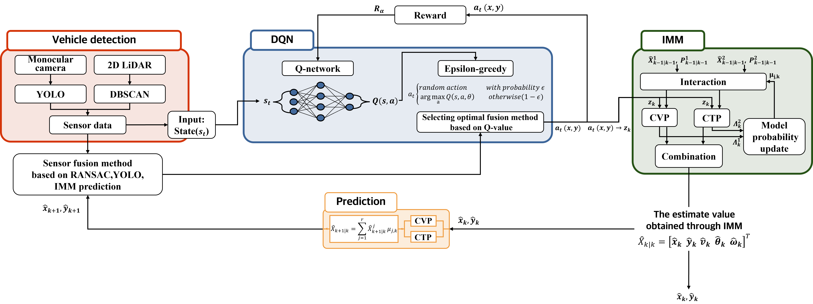
From a corner observation to the vehicle-center state
The sensors observe a vehicle corner, but the quantity to estimate is the vehicle center. The state holds the center position, speed, heading and yaw rate, and a measurement model h(X) links the center to the corner using the vehicle’s size and heading.
Straight driving is modeled with a constant-velocity (CVP) model and turning with a constant-turn-rate (CTP) model. The nonlinear motion and corner-measurement models are linearized with Jacobians F and H, and an extended Kalman filter (EKF) runs prediction and update for each mode.
03 / OBSERVATION
Corner estimation for each situation
To compare vehicle positions consistently across frames, the front-right corner serves as a common reference point. The information that best describes this corner changes with the vehicle’s heading, occlusion and sensor conditions, so I computed five corner candidates, one for each observation condition.
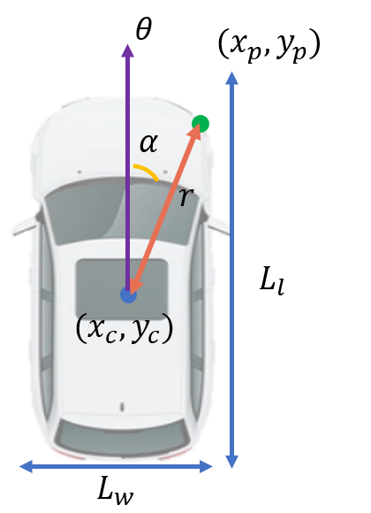
The center (x_c, y_c) and the observed corner (x_p, y_p) are different points. The five methods below are candidate observations of the same corner.
Same corner, different observations
When two sides of the vehicle are visible, the intersection of two RANSAC lines is used. With one side visible, an image boundary is combined with a LiDAR line. When the vehicle turns or observations become unstable, the nearest LiDAR point or the IMM prediction serves as the candidate.
When valid line models are available for both the front and the side of the vehicle
When the YOLO maximum-azimuth boundary is used with a RANSAC vehicle side
When the YOLO minimum-azimuth boundary is used with a RANSAC vehicle side
When a physical reference point is needed even while the vehicle turns
When occlusion or sensor outliers make the current observation unreliable
Red ×: LiDAR points / Yellow: RANSAC lines / Purple: YOLO max azimuth / Light blue: YOLO min azimuth / Teal dot: corner candidate / Blue dot: sensor position
04 / SIMULATION
Simulation results
I built a MATLAB simulator that generates sensor observations with a 1° LiDAR resolution and a 70° maximum incidence angle. Straight, left-turn and two-vehicle scenarios driven by Pure Pursuit were used both to validate state estimation and to generate DQN training data.
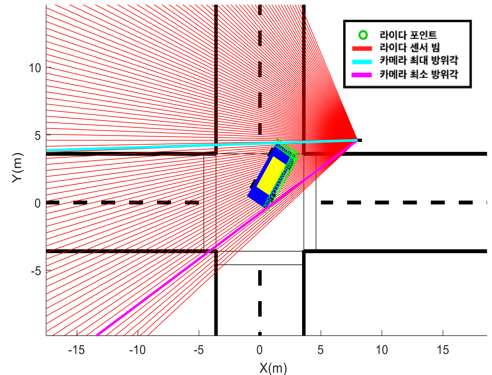
Straight and left-turn vehicle motion was produced with Pure Pursuit. The plots below show single-vehicle left-turn and straight results separately.
Representative left turn — single vehicle


Vehicle state estimation — single-vehicle left turn

Straight driving — single vehicle
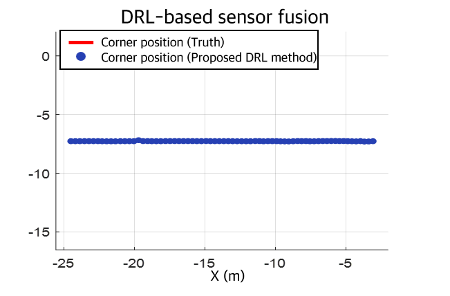
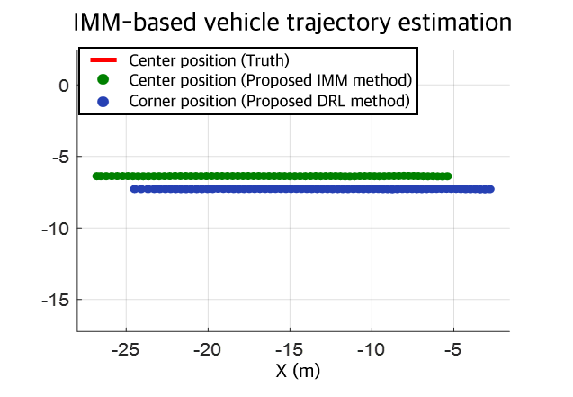
Vehicle state estimation — single-vehicle straight

| Simulation scenario | Position RMSE | Speed RMSE | Heading RMSE |
|---|---|---|---|
| Single vehicle, left turn | 0.066 m | 0.491 m/s | 0.038° |
| Single vehicle, straight | 0.012 m | 0.419 m/s | 0.001° |
| Multiple vehicles, left turn | 0.054 m | 0.468 m/s | 0.041° |
| Multiple vehicles, straight | 0.015 m | 0.444 m/s | 0.002° |
Position RMSE is measured at the vehicle center, with single- and multi-vehicle scenarios reported separately.
05 / FIELD TEST
Field test
I applied the algorithm validated in simulation to a real intersection in Magok-dong, Gangseo-gu, Seoul. A monocular camera and 2D LiDAR platform was installed at the roadside, and the test vehicle carried RTK-GPS to record the reference position of its center.
I calibrated the camera and LiDAR to project LiDAR points onto the image, and measured and corrected the timing offset between the two sensor streams. Estimated trajectories and errors were evaluated against the RTK-GPS vehicle-center position.
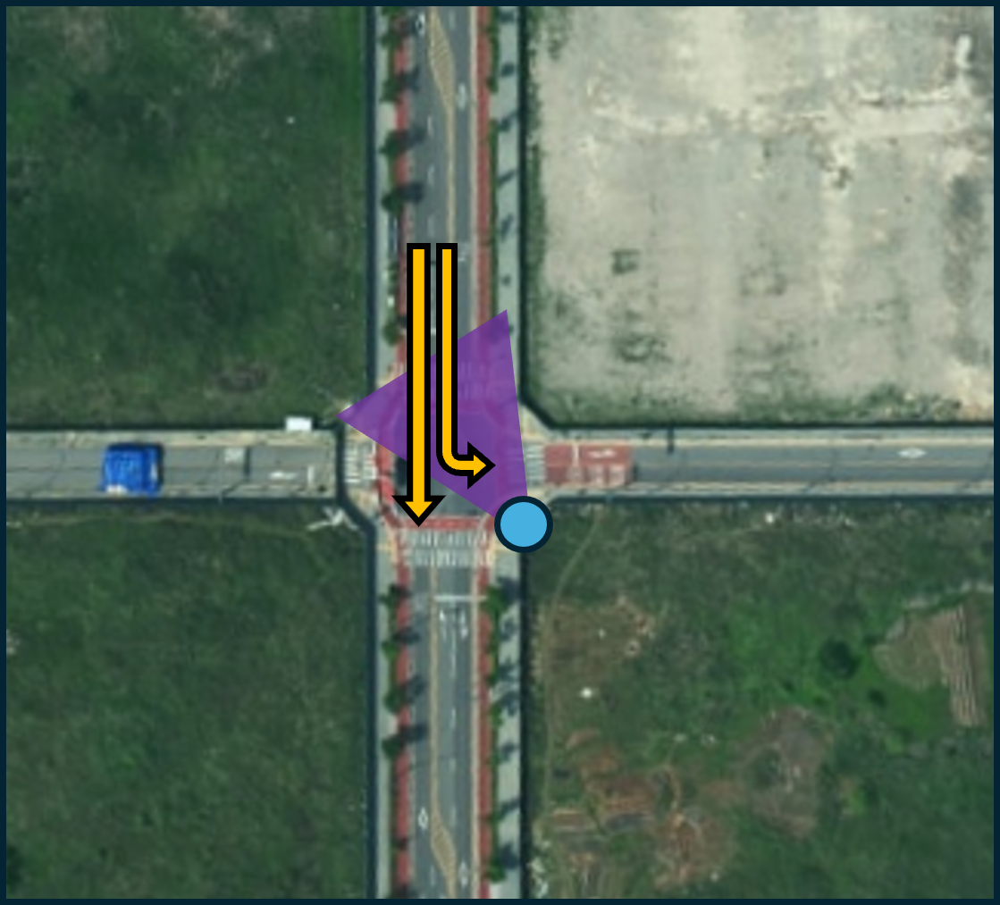
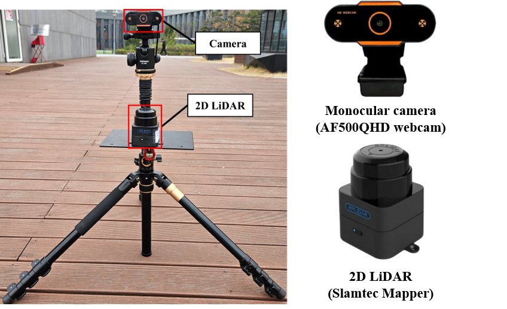
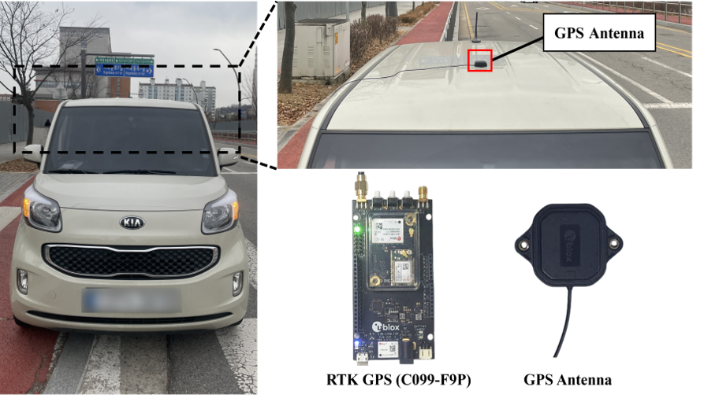
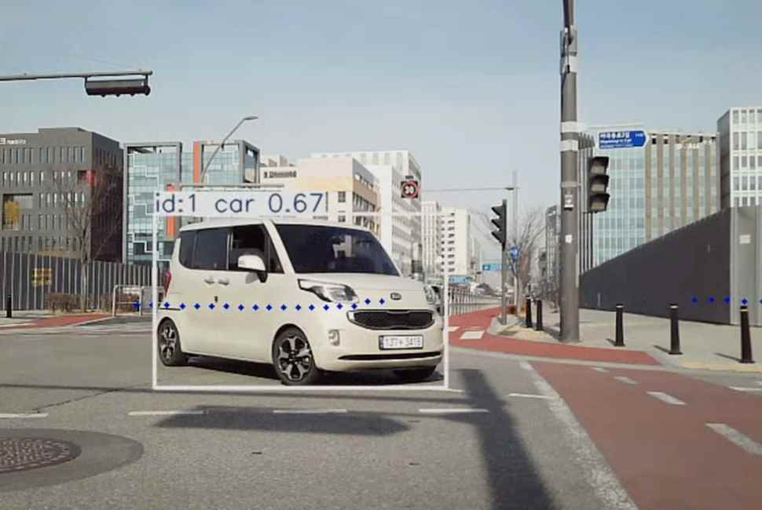
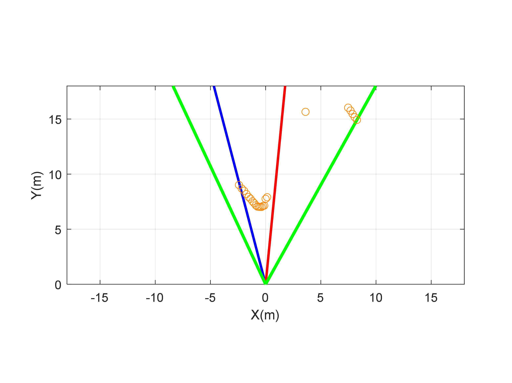
Sensor inputs at the same time step / the vehicle region detected in the camera image and the matching 2D LiDAR points together form the vehicle candidate.
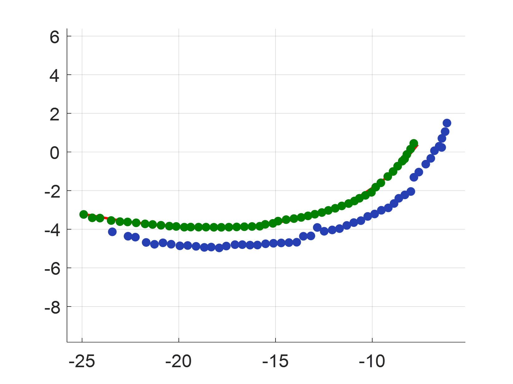
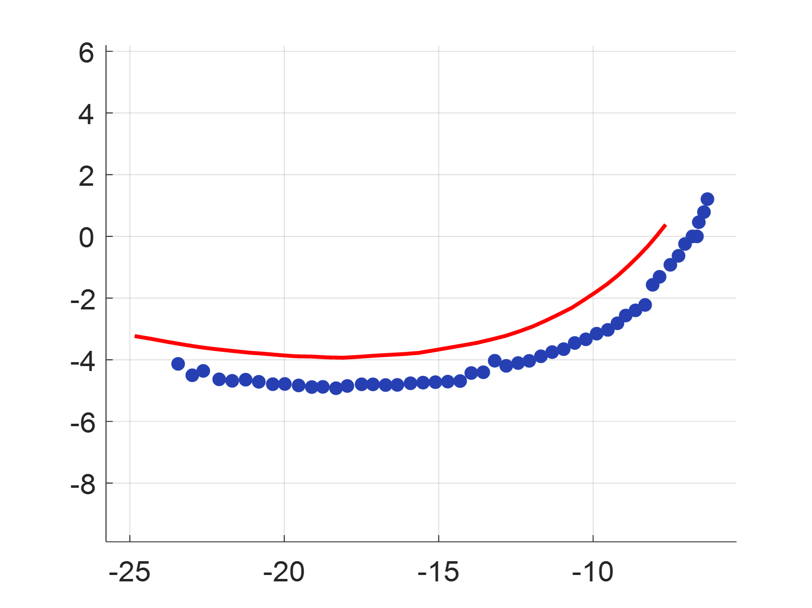
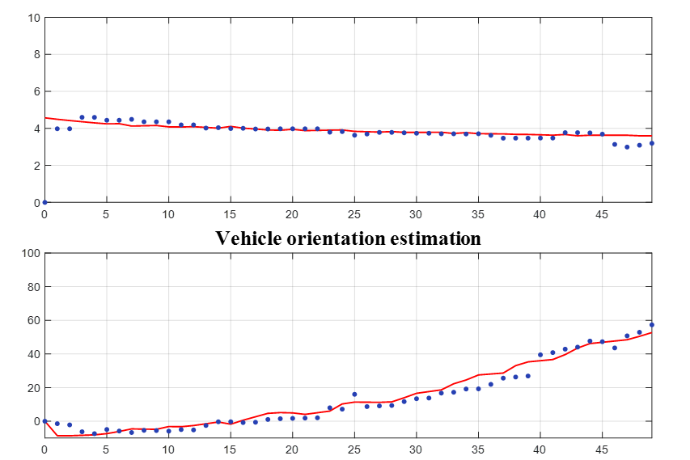
| Field scenario | Position RMSE | Speed RMSE | Heading RMSE |
|---|---|---|---|
| Left turn | 0.092 m | 0.224 m/s | 3.507° |
| Straight | 0.078 m | 0.401 m/s | 2.554° |
06 / OCCLUSION
Handling occlusion
Another vehicle hides part of the target, degrading both camera and LiDAR observations.
While the target cannot be observed directly, tracking continues on the IMM prediction.
Once the target reappears, the DQN again selects the candidate that fits the current sensor state, and tracking returns to the true trajectory.
Red ×: LiDAR points / Purple: YOLO max azimuth / Light blue: YOLO min azimuth / Blue dot: sensor position
Trajectory recovery after occlusion
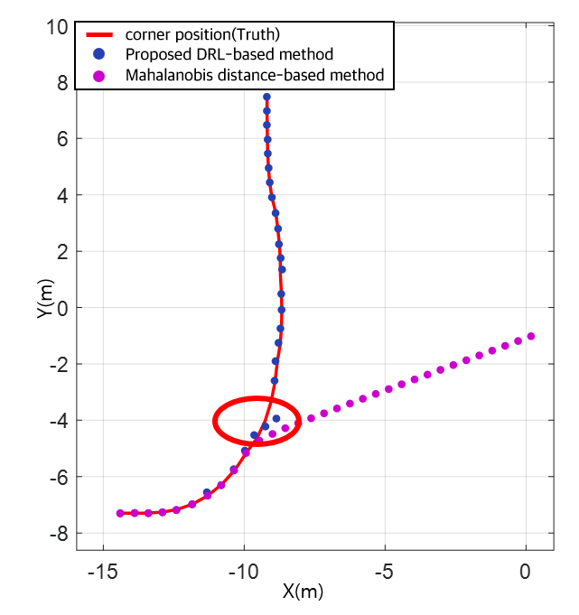
Selects the reference point by the Mahalanobis distance between the IMM prediction and each candidate. When observation conditions changed sharply after occlusion, it struggled to converge back to the true trajectory.
Relies on the IMM prediction candidate during occlusion, then selects the observation candidate that fits the current sensor state after redetection to recover the track.
07 / RESULT
Comparison
20.6%
Lower position RMSE in the field
On the same field data: 0.126 m for the Mahalanobis-distance baseline, 0.100 m on average for the proposed method
| Test environment | Baseline | Proposed (mean) | Reduction |
|---|---|---|---|
| MATLAB simulation | 0.043 m | 0.030 m | 30.2% |
| Field test, Magok-dong, Seoul | 0.126 m | 0.100 m | 20.6% |
In each environment, both methods were compared on the same data.
08 / OWNERSHIP
My contribution
- PlanningDefined the research question, reviewed prior work and wrote the project plan
- AlgorithmsDefined the corner-candidate methods; designed the DQN state, actions and reward and implemented its training and inference in Python; designed the motion and measurement models; implemented the per-mode EKFs and IMM estimation
- EnvironmentBuilt the MATLAB simulation, installed the sensor platform and drove the test vehicle
- ValidationCalibrated the camera and LiDAR and corrected input timing, collected RTK-GPS reference data, and analyzed simulation and field logs
- PublicationsWrote the master’s thesis, gave first-author oral presentations at ICROS 2024 and 2025, and co-invented a patent application
09 / OUTPUT
Publications and patent
Master’s thesisReinforcement Learning-Based Monocular Camera and 2D LiDAR Fusion for Roadside Sensing at IntersectionsExtends the ICROS work to single- and multi-vehicle field tests at a real intersection. Title translated from Korean.Chung-Ang University Graduate School, 2025.08 / 98 pages / PDF (Korean)ICROS 2025A Reinforcement Learning-Based Roadside Sensor System for Vehicle TrackingDQN–IMM vehicle tracking framework and simulation results. Title translated from Korean.First author, oral presentation / PDF (Korean)
Patent applicationVehicle State Estimation Method, Apparatus and Recording MediumCo-inventor / Application no. 10-2025-0136289